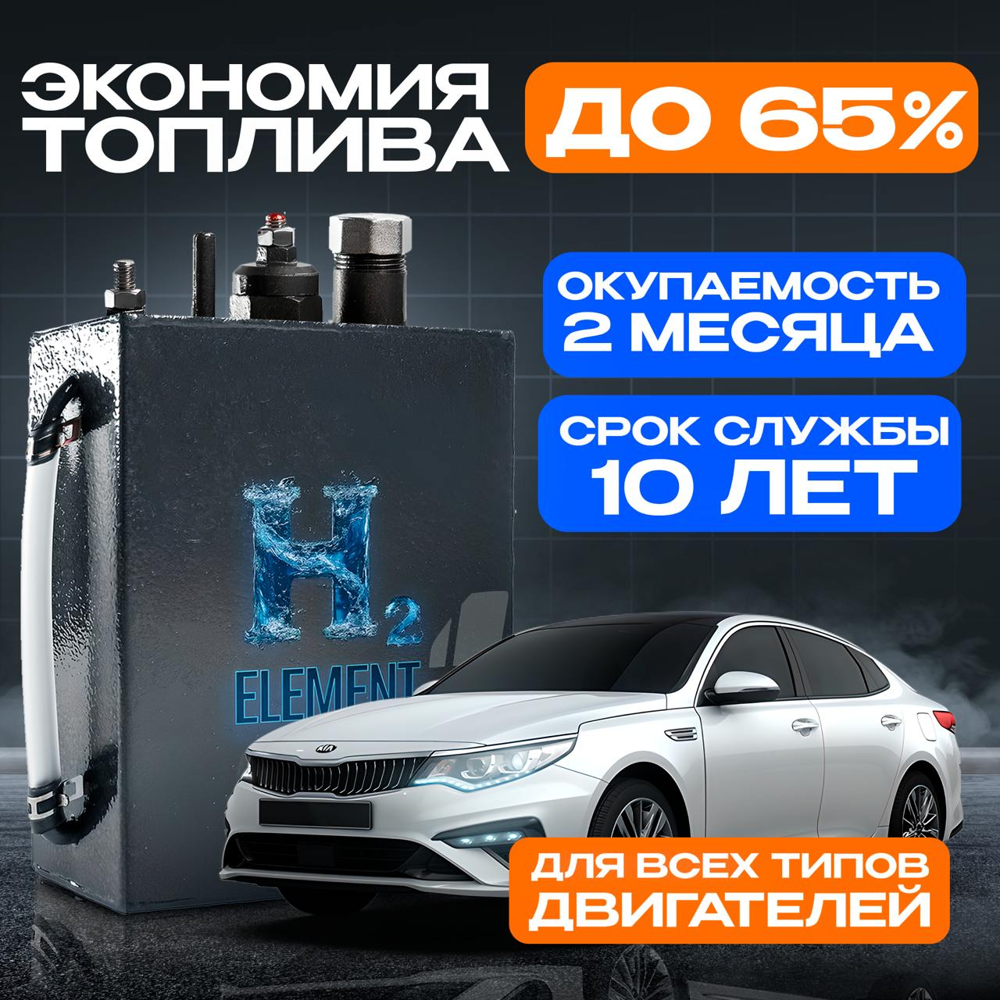

Влияние водорода на ресурс двигателя: мифы и реальность
Главный вопрос, который задает владелец автомобиля перед установкой системы ВГА-90: «Не прогорят ли клапана и как это скажется на ресурсе мотора?». Опираясь на исследования ВИНИТИ РАН и многолетнюю практику, мы разберем техническую сторону процесса.
1. Температурный режим: Разрушение мифа
Бытует мнение, что горение водорода повышает температуру в камере сгорания, что ведет к прогару поршней. В реальности всё работает ровно наоборот. Газ Брауна (HHO), добавляемый в мизерных пропорциях (до 1.5 литров в минуту), выступает катализатором. Он увеличивает скорость распространения пламени, из-за чего топливно-воздушная смесь сгорает за меньшее время и при более низкой пиковой температуре в конце такта расширения.
2. Эффект кавитационной очистки
При работе системы H2 ELEMENT образуется перегретый пар. Вступая в реакцию с углеродистыми отложениями (нагаром), водород инициирует процесс пиролиза. Нагар постепенно превращается в газ и выводится через выхлопную систему. Это не просто «мягкая промывка», это восстановление геометрии камеры сгорания. После первых 500 км пробега компрессия в цилиндрах выравнивается, а детонационные стуки исчезают.
3. Влияние на моторное масло
При обычном цикле работы ДВС часть несгоревшего топлива неизбежно попадает в картер, разжижая масло и окисляя его. Поскольку водород обеспечивает 98-100% сгорания топлива, попадание углеводородов в картер прекращается. Масло X-ELEMENT в сочетании с водородной системой сохраняет свои вязкостные характеристики на 30-40% дольше, чем в стандартных условиях. Это подтверждается лабораторными анализами отработанного масла.
4. Безопасность и электроника
Системы серии ВГА оснащены многоуровневой защитой. Генерация газа происходит только при заведенном двигателе. В случае остановки мотора подача тока прекращается мгновенно, а встроенные гидрозатворы исключают обратную вспышку. Система полностью совместима с современными ЭБУ (электронными блоками управления), не вызывая ошибок Check Engine.
Заключение экспертов:
Использование технологии H2 ELEMENT не только не сокращает ресурс, но и продлевает срок службы ДВС до 3-х раз за счет удаления абразивного нагара и устранения детонационных нагрузок. Это самое доступное средство «омоложения» мотора на текущий момент.